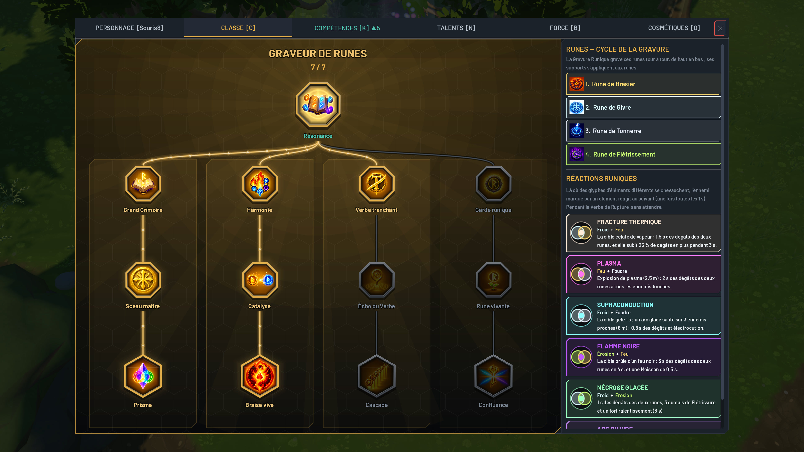

Version 0.3.0 · 30 octobre 2026
Terres, légendaires et renouveau visuel
Huit classes jouables, trente légendaires de plus, l'Arbre des Terres et un nouveau menu principal.
Huit classes
Gardien de braise, Arcaniste, Rôdeuse, Invocateur, Pyromancien, Tisse-Givre, Mande-Tempête et Porte-Peste, chacune avec sa mécanique et son arbre de classe, et des personnages enfin animés.
Légendaires et Terres
48 légendaires répartis en quatre tiers, du T4 courant au T1 rarissime, l'Arbre des Terres, des coffres et des bonus de carte. Le Rayon Élémentaire devient un faisceau persistant.
Menu et confort
Nouveau menu principal et sélection de personnages, un seul écran de chargement, un Codex de mots-clés survolables et des options graphiques complètes.
Notes de version
Monde et personnages
- Huit classes jouables : Gardien de braise, Arcaniste, Rôdeuse, Invocateur, Pyromancien, Tisse-Givre, Mande-Tempête et Porte-Peste, avec leurs mécaniques et arbres de classe.
- Personnages Quaternius animés pour les huit classes, Diablotin et Gobelin pugnace ; modèles de personnages allégés et armes correctement attachées aux mains.
- Décors Quaternius de nature, de village et d'artisanat dans le château et les zones ; premières apparences d'épée, hache et bouclier Quaternius.
- Campagne plus longue, dix paliers de cauchemar et niveaux de zone progressifs. Arbre des Terres, coffres et bonus de carte.
- Niveaux précalculés et préchargement des ressources pour réduire les blocages. Correction des modèles dupliqués et des fuites lors du chargement des scènes précalculées.
Combat et progression
- Rayon Élémentaire refait : faisceau persistant qui suit le curseur sans laisser d'anciens traits, effets distincts de glace, feu et foudre, glyphes aux extrémités. Nouveau tag Rayon et correction des bonus de dégâts par cumul.
- Supports Tout Autour et Retour ; corrections des projectiles des totems, de leur limite et de Déploiement. Supports incompatibles retirés de Pluie de flèches.
- Touches multiples : le premier projectile d'un lancer inflige ses dégâts complets, les suivants 70 % sur une même cible.
- Énergie des objets de niveau 40 et plus pour les supports ; coûts, compatibilités et restrictions d'armes détaillés.
- Suppression des exclusivités de talents. Nouveau nœud à trois rangs dans les arbres Feu, Givre et Foudre : conversion physique vers l'élément, jusqu'à 100 %. Cumul équitable avec les supports.
- Descriptions corrigées, notamment Barrage. Notifications centrales mises en file pour les compétences, supports et emplacements débloqués, y compris lors de plusieurs niveaux gagnés d'un coup.
Objets et forge
- Trente légendaires supplémentaires : 48 au total, avec quatre tiers de rareté, de T4 courant à T1 rarissime.
- Légendaires T4 retravaillés pour proposer de vraies alternatives de leveling aux rares, avec spécialités et compromis.
- Identités de plusieurs légendaires renforcées ; tiers visibles sur les nouveaux objets comme sur les anciens. Correction des modificateurs négatifs à la génération.
- Choix de la compétence principale pour les comparaisons de dégâts, énergie implicite et ré-énergisation à la forge.
Interface et confort
- Nouveau menu principal et sélection de personnages : aperçus chargés en arrière-plan, cache et changements de classe sans reconstruction de l'écran.
- Suppression du changement de personnage en jeu : sélection et création uniquement depuis le menu principal.
- Un seul véritable écran de chargement dès le lancement du personnage, sans écran intermédiaire.
- Codex de mots-clés et infobulles survolables, accessible depuis le menu pause.
- Options : limite d'images de 30 à 360 avec curseur, saisie clavier et mode illimité ; anticrénelage, résolution 3D, bloom, visibilité du butin, buffs et barres de vie.
- Outils DEV : tous les Tourments, +50 points d'Arbre des Terres et catalogue des 48 légendaires trié par tier et emplacement, avec génération directe de l'objet choisi.
- Correction de la réinitialisation du compte et renforcement de l'isolation des tests pour protéger les sauvegardes du joueur.